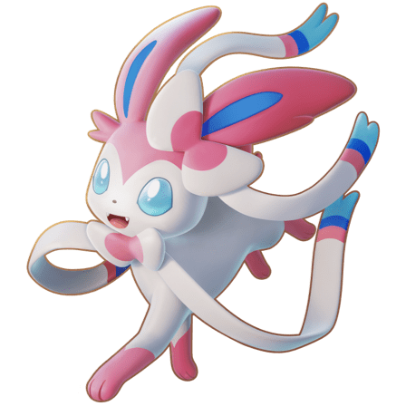
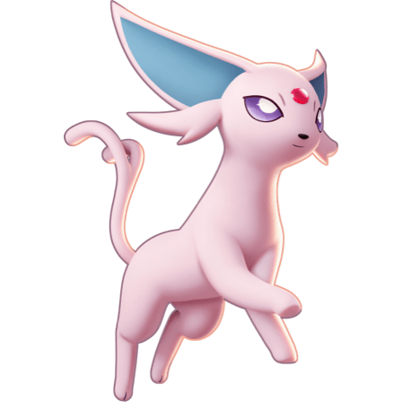
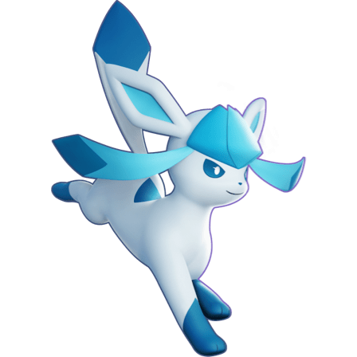

-
Sylveon
Fairy
Descrição
Sylveon é um Pokémon mamífero quadrúpede coberto com pele de cor creme pálido com pés, orelhas e cauda rosa. Tem olhos azuis claros, orelhas compridas com interior azul e pêlo mais grosso, nariz minúsculo, dois tufos de pêlo soltos no topo de sua cabeça e dois dentes pontiagudos podem ser vistos quando abre a boca. Há dois arcos em seu corpo: um na base da orelha esquerda e outro no pescoço. Cada arco é creme pálido com um centro rosa e arrasta um par de antenas em forma de fita. As antenas são creme pálido com pontas azuis claras. Antes da ponta de cada sensor há uma listra rosa e depois uma listra azul escura. Tem pernas delgadas com pequenas patas de três dedos e uma cauda fofa e ligeiramente curvada. As antenas em forma de fita de Sylveon emitem uma aura calmante que apaga qualquer sensação de hostilidade, permitindo que ele pare as lutas instantaneamente. Ao caçar, ele gira suas antenas como uma distração enquanto a aura enfraquece os sentimentos de hostilidade em sua presa, então ataca a vítima. Ele também envolverá suas antenas ao redor do braço de seu treinador enquanto caminham juntos, o que permite que ele leia seus sentimentos. Quando uma luta começa entre Sylveon e Pokémon do tipo Dragão, Sylveon vai bravamente atacar eles, mesmo que sejam muito maiores que ele; em Galar, essa façanha é contada como um conto de fadas.
-
Espeon
Psychic
Descrição
Espeon é um Pokémon mamífero quadrúpede com pernas finas e patas delicadas. É coberto de pêlo lilás fino. Suas orelhas são grandes e tem olhos roxos com pupilas brancas. Há tufos de pelo perto de seus olhos e uma pequena gema vermelha embutida em sua testa. Ele também tem uma cauda fina e bifurcada. O pelo aveludado de Espeon é tão sensível que pode sentir mudanças minúsculas no ar, permitindo prever o clima e os movimentos de seus inimigos. Ao prever as ações de um oponente, a ponta de sua cauda treme. A gema na testa de Espeon brilha quando libera energia psíquica da gema e escurece quando toda a energia acumulada se esgota. Espeon aumenta seu poder psíquico tomando banho de sol. Como tal, não lida bem com batalhas à noite. Espeon mostra extrema lealdade a qualquer Treinador que considere digno, mesmo sendo dito ter despertado seus poderes psíquicos de seu desejo de proteger seu Treinador; outros dizem que seus poderes nasceram de sua necessidade de se manter seguro. Espeon raramente é encontrado no deserto, sendo mais comumente encontrado em áreas urbanas, sob a propriedade de outros treinadores. Na Geração II, Morning Sun foi seu movimento de assinatura.
-
Glaceon
Ice
Descrição
Glaceon is a quadrupedal, mammalian Pokémon covered in light-blue fur that can be frozen into sharp quills. It has long, pointed ears, dark eyes, and a small nose. A teal crest with two dangling flaps adorns its head, resembling hair or headgear. Glaceon has two dark blue, rhombus-shaped markings on its back; the tip of its tail, feet, and flaps are the same shade of blue. By controlling its body temperature, the moisture in the air freezes, producing ice crystals or diamond dust surrounding it. It is capable of freezing its fur into sharp needle-like icicles, which it can fire at opponents or use as protection as it tackles at its prey. It can quickly drop its body temperature below −75 °F (−60 °C). Glaceon is rather popular in ski resorts due to its ability to create powdery snow. Those captivated by Glaceon's beautiful snowfall will be instantly frozen without realizing it.